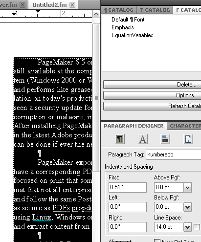
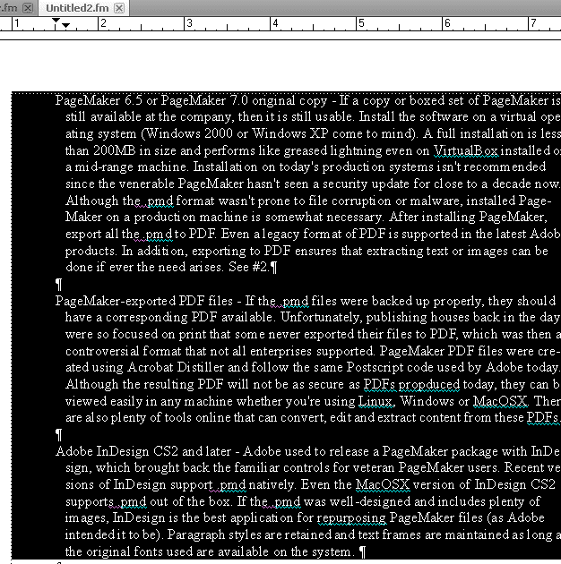
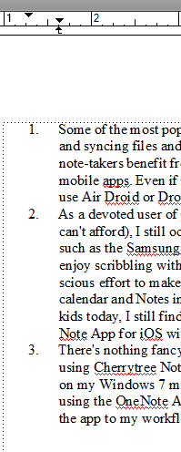
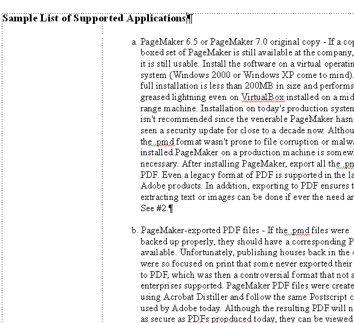

Aligning numbered paragraphs in FrameMaker¶
The process of creating automated lists in FrameMaker is different from standard word processors, and formatting and aligning text can be confusing for users new to the application. However, once a user gets accustomed to working with Paragraph Designer first before applying formatting to text, the process eventually becomes easier.
To align numbered paragraphs:
Select all the paragraphs to be numbered.
In the Paragraph Designer pod, click Commands, then New Format. Enter a name for the Paragraph Tag.
Click Create.
Click and drag the top marker on the ruler to specify the first line indent. You can also click the Basic button on the Paragraph Designer pod and enter a value in the First box.

Click and drag the lower marker to set the alignment of the rest of the lines of paragraph text. Move the marker so that there is enough space to accommodate a tab stop, period, and the paragraph number.

Add a tab stop in the exact same position as the lower marker by clicking at a point just below the ruler or entering a value by clicking Edit in the Tab Stops area. The tab stop will provide the space between the number and the text. Click Update All.
In Paragraph Designer, click the Numbering button.
Check Autonumber Format.
In the Building Blocks list, select
<n+>and then add a period. Select\tto add the tab stop.Click Update All.
The text alignment of the list will be retained even if you add columns or a side head to the document.
Note
You can also use other Building Blocks such as
<a+>to format the type of numbering/list. You may have to modify the lower marker or tab stop to adjust text alignment.